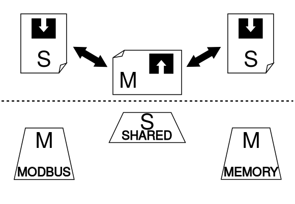

Modbus Shared Memory - Simpler is Better.¶
{kind=link}
Introduction¶
Tired of all those excelent, fully featured Modbus libraries? Just want to establish this annoying communication and start doing important stuff? Here you have it.
- Modbus Shared Memory is a library that allows you to:
establish Modbus communication,
forget about Modbus communication.
- Modbus Shared Memory implements well-known concept from field of PLC programming. A programmer:
declares memory block - variables which will be exchanged via Modbus,
declares an object responsive for modbus communication,
does something with those variables - rest of the program.
from ModbusSharedMemory.client_server import ModbusMasterTCP
from ModbusSharedMemory.memory import MemoryStore, MemoryVariable
# declare 8 Word = 16 Bytes long memory
mem = MemoryStore(8)
# map some variables to memory addresses, name them as you wish
mem.STATE = MemoryVariable.word(address=0) # 2 Bytes
mem.COUNTER = MemoryVariable.uint32(address=1) # 4 Bytes
# declare master worker, will exchange memory
client = ModbusMasterTCP(mem, server_ip='localhost', default_slave_id=1)
# start exchanging
client.run()
# now play with variables - do your stuff
mem.COUNTER = 10
print(mem.STATE)
# ...
# at the end, kill client worker
client.kill()
Motivation and features¶
Modbus Shared Memory is a python module, written in pure python, that implements concepts known from PLC programming manner. It greatly simplifies task of using Modbus protocol as a data exchange system. The whole idea born around a concept of using cheap micro-computers (eg. raspbery pi, asus tinkerboard etc.) as a HMI device, communicating with a PLC via modbus protocol. It is widely-used pattern to incorporate Modbus as a data exchange layer between PLC and HMI. Searching for a Modbus protocol implementation for python lead us to two options: uModbus and PyModbus. Those two libraries implements Modbus protocol and expose Modbus functions for programmer use. Those are great libraries, but we noticed one disadvantage: since those two are excelent for low-level manipulation and they gives much flexibility, they lacks a really simple interface known from PLC universe: declare memory that will be exchanged and forget about modbus. Modbus Shared Memory is our attempt to recreate that interface.
Features¶
- We can enumerate current features:
MSM depends on standard python modules and a uModbus, which is writen in pure python,
MSM is written in pure python too, it does not require any compilation steps during installation,
can be used in any enviorment that supports python
it is small and simple
it does the job
it supports abstraction layer for both: slave (PLC side) and master (HMI side)
Limitations¶
- MSM is great, however it is still under development. Current limitations are:
MSM supports only ModbusTCP. ModbusRTU is under development
MSM server (slave) is using only memory-based Modbus functions: no. 3, 6 and 16. Rest of standard functions are under development too.
Modbus client (master) implements only memory register based mode. Coils and Inputs are under development.